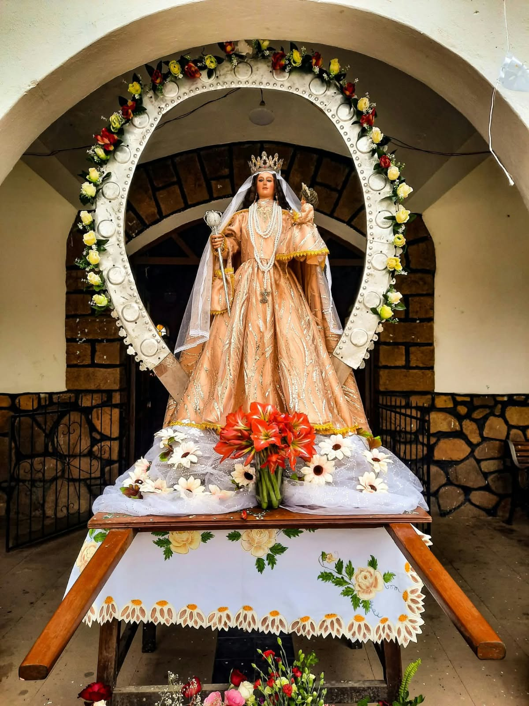
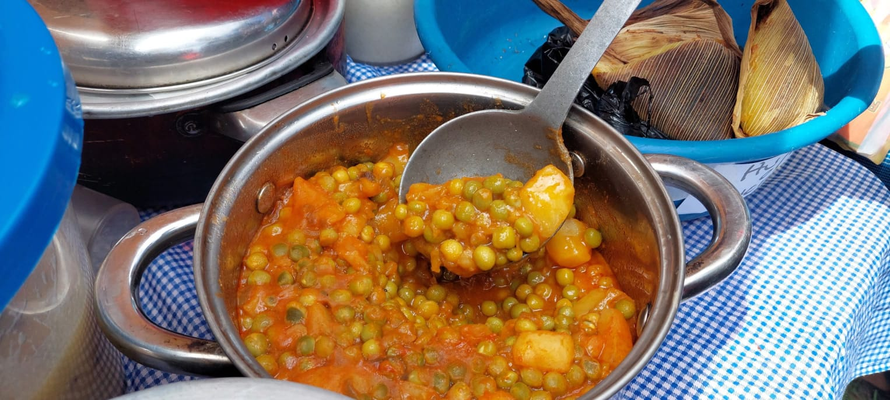
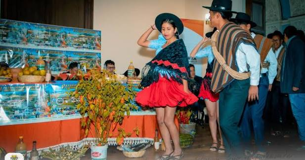
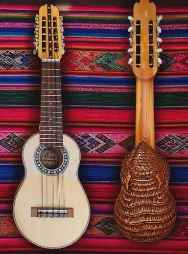
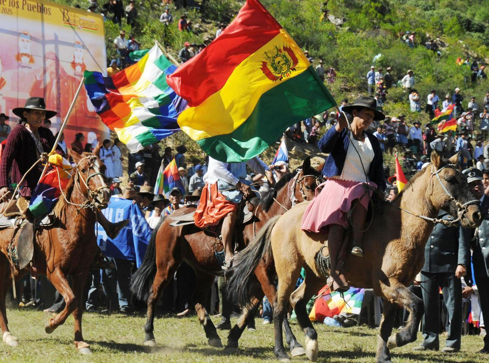
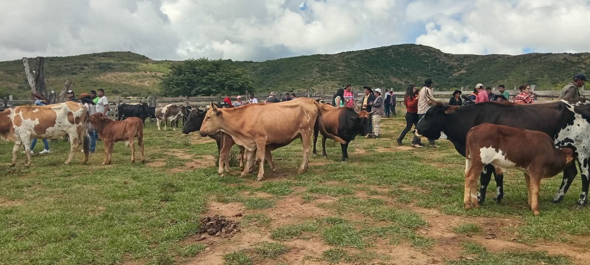
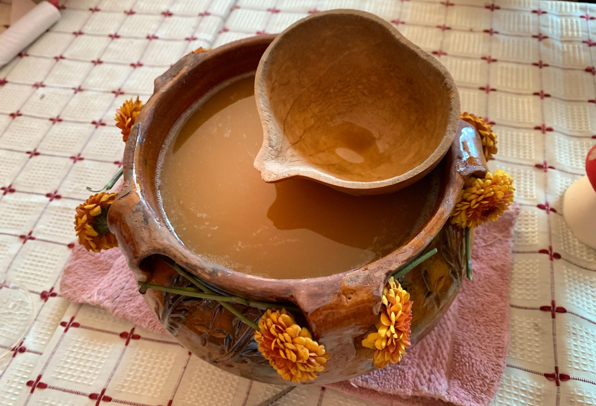
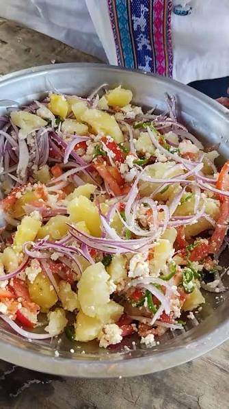
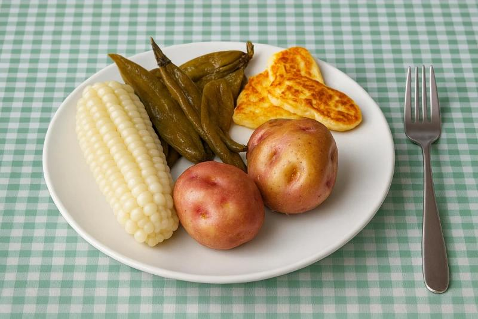
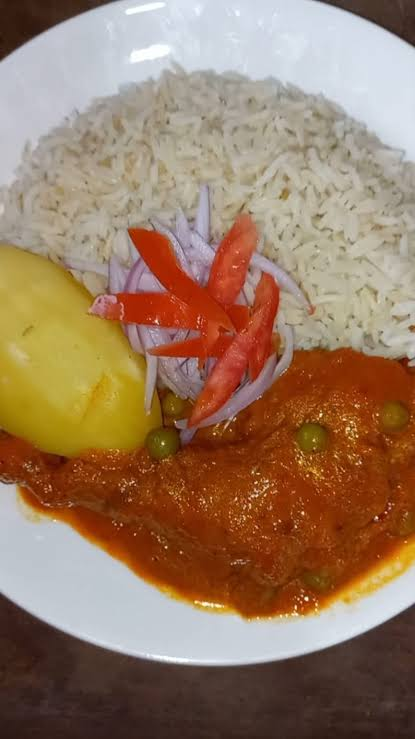

❀
Tradiciones
Conoce las costumbres y expresiones culturales que forman parte de nuestra identidad.
Ver más →
Descubre nuestras raíces
Tradiciones, costumbres y expresiones que mantienen viva la identidad de nuestro querido municipio de El Villar.
Conoce las costumbres y expresiones culturales que forman parte de nuestra identidad.
Ver más →

Las raíces de nuestro pueblo nos dan identidad.

Son expresiones de la identidad cultural local que representan las costumbres y la tradición musical de la región.

El charango forma parte de los instrumentos tradicionales mencionados en las referencias culturales de El Villar y acompaña la expresión musical de la región.
Es una celebración religiosa dedicada a la Virgen del Rosario, considerada patrona del municipio.

Se realizan actos cívicos y homenajes relacionados con Manuel Ascencio Padilla y Juana Azurduy, figuras vinculadas a la lucha por la independencia. También se recuerda la importancia histórica de la batalla del Abra de Yotala.

Es una actividad vinculada a la producción local, la gastronomía y la música tradicional, que permite mostrar productos y costumbres de El Villar.



